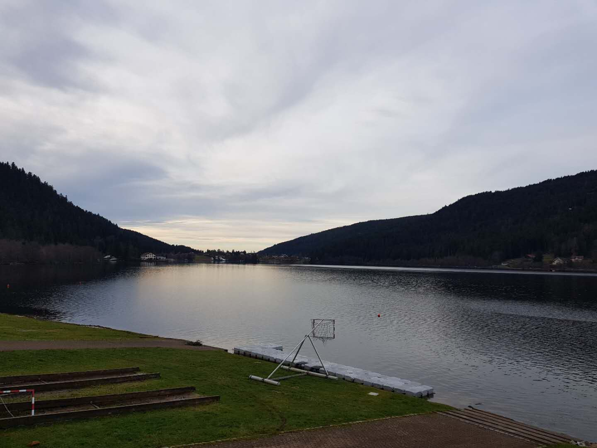

I've been to Chamonix once last year for ski, this experience is unforgettable because of the weather and the extremely cold wind, also the undeniable beautiful scenery of Mont Blanc and the long distance from Paris. So this year, in order to ski during the Christmas vacation, I used Google Maps to search for a ski area that is not far away from paris that can be easily reached by TGV or TER, after entering the keyword “ski station”, I clicked on one of those results randomly, it is “Gérardmer Ski”.... What I appreciate most of Gérardme------this little town is that website of it is pretty good, with a lot of useful and well classified tourism information. Click here to visite the website of Gérardme. The Hotel where I stayed is called Les Loges du Parc, it's quite good. The first reason to choose it is that almost all the chambers there have a absolutely great view of the Gérardme lake,and the park between the lack and the hotel. The second reason is that one of the stop of the shuttle bus to the ski area is right at the gate of the hotel, which is so convenient for people who don't drive a car like me. The most important part for me is that... there are two fat cats in the hall.... so cute....I highly recommend you to take a walk around the lack after lunch or brunch.
The ski area is better than i thought, so beginner-friendly, and the staffs there are so warm-hearted!
Contact:Mail: shiyue.zhang.95@gmail.com